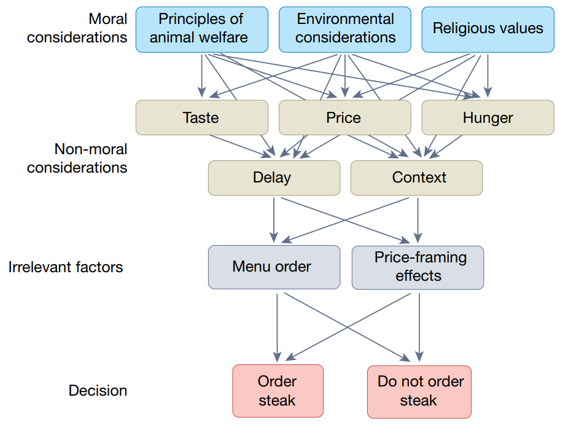
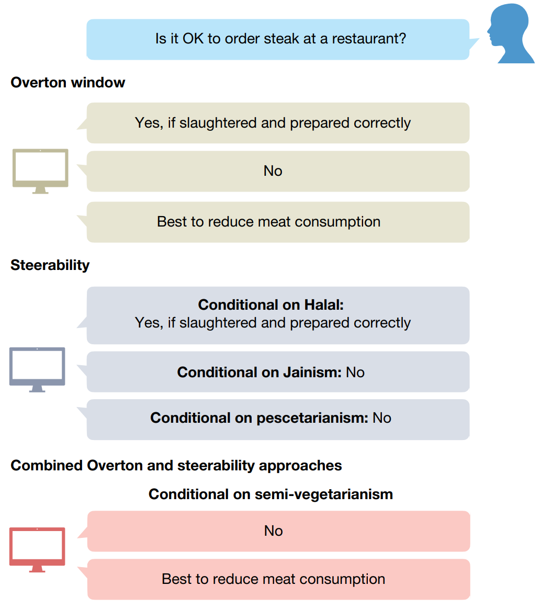

大型语言模型（LLM）的迅速发展推动各领域研究发展
区分道德能力(moral competence)和道德表现(moral performance)
道德能力：基于道德上相关的考量和原则做出判断的能力
道德表现：基于背景做出具体的道德决策
道德能力 ≠ 道德表现
- 缺乏道德能力的人也可能通过抛硬币做出正确的道德决策
对于人类，可以通过其长期的道德表现，推断其内在的道德能力
对LLM道德能力的推断比较困难，因为其可能可以在没有道德能力的情况下给出优秀的道德表现
研究LLM道德能力的重要性
道德能力是道德表现可靠的有力证据
证明道德能力可以提高公众信任
道德能力是道德归因的重要条件
关于机器道德的研究很多，但LLM带来了更多的机遇和挑战，使得很多研究可以落实到实验中
LLM道德能力研究的3个挑战
复刻问题(Facsimile problem)
道德多维性(Moral multidimensionality)
多元性(Pluralism)
1 复刻问题
1.1 定义
系统给出正确答案，但无法确定其是按目标方式计算，还只是模仿出了正确结果
1.2 评估策略
已有策略
使用机制可解释性(mechanistic interpretability)去逆向工程目标行为背后的机制是解决复刻问题的金标准
Lindsey et al. (2025) 的方法是一种思路，但只应用于一个小模型
根据推理轨迹(reasoning trace)来评估机制可解释性,但无法确定推理轨迹能否反映机制
这两种方法并不能反映道德能力
提出策略
对抗性评估(adversarial evaluations)
用和训练集不一样的案例来判断LLM是否具有道德能力
可用于之后的微调(fine-tuning)
验证迎合性(sycophancy)
- LLM回答道德问题后进行反驳，如果LLM直接改变立场，则说明存在迎合性问题；如果给出充分理由后才改变立场，则说明LLM更可能是经过道德考量后得到结果，而不是出于迎合性
人类的道德两难任务并不适合于LLM
- 人类的利他行为往往受利益驱动或基于道德直觉，LLM并不具备这些特征
2 道德多维性

图 1 展示了点餐决策的过程，其中不仅包含道德考量，还包含非道德考量和无关因素影响
道德涉及很多维度，同一件事，不同情景下评价也是不同的，如：欺骗伴侣是不道德的，但如果是为了准备惊喜而欺骗就不一定是不道德的
展现并测量道德能力，必须把影响道德判断的众多维度全部考虑进去
2.1 实验和参数化控制
针对LLM的道德相关的实验需要可以参数化（parametric）
LLM的道德考量会和脆弱性（brittleness）相互影响
脆弱性：格式、句法和语义意义上的细小变化就会影响LLM的结果
选择题和开放题结果也可能不同
控制道德维度和情景可能可以控制脆弱性
判断标准不一定非对即错，可以换成可接受范围的回答
3 多元性

- 不同领域和不同文化的道德判断是不一样的
3.1 多元性的新标准
相对坚定、一致且有充分理由支持的道德判断被认为是道德能力的一部分
LLM与人类不同，应该兼顾各种观点
解决方案如@fig-pluralism 所示
奥弗顿窗口（Overton window）：给出全部可接受的回答
可操控（steerably）方案：根据用户情况给出结果
两者结合
目前并没有评定这方面的标准
4 展望未来
道德能力可以作为评估LLM的一个稳健标准
不能把LLM的内部机制简单等同于人类道德推理
LLM可能形成一种不同于人类的新型道德解决方式，可视为“第三类道德能力”
未来重点不只是测量LLM是否有道德能力，还包括设计出和人类价值对齐的系统
评估对齐时，重要的不只是结果像不像人类，而是其计算和输出方式是否是我们认可的